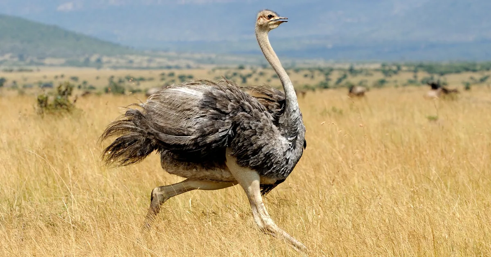
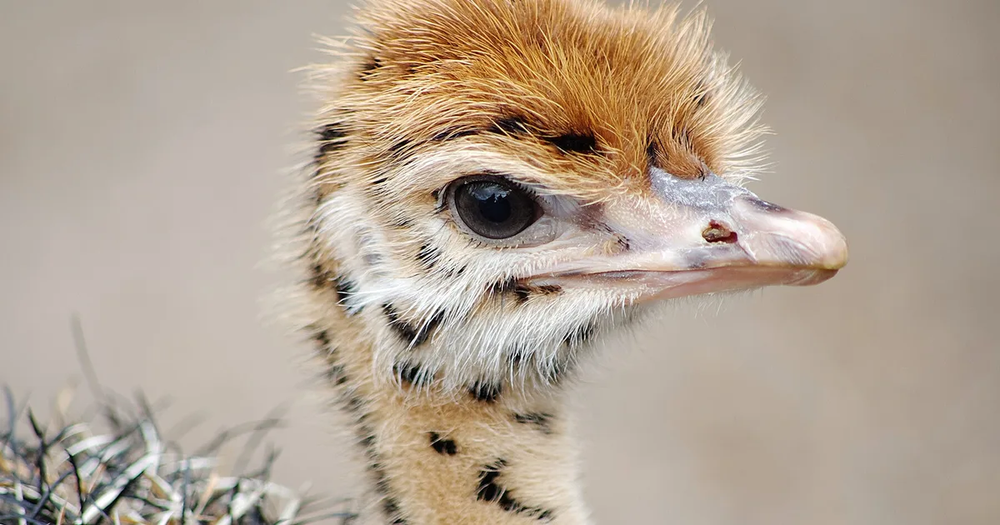

The Ostrich's scientific name is Struthio Camelus.
They mostly reside in Africa's plains and woodlands.
Ostriches can live for 30-40 years.
They mostly reside in Africa's plains and woodlands.
Ostriches can live for 30-40 years.

Their diet consists of plants, roots, seeds, insects, lizards, and other creatures.
Males ostriches are black and white. Females and babies are brown and gray.
Ostriches have 3 stomachs to break down the different foods they eat.
Males ostriches are black and white. Females and babies are brown and gray.
Ostriches have 3 stomachs to break down the different foods they eat.

Ostriches are flightless birds. However they are the fasted birds in the world and can reach speeds of 43 mph.
Ostriches are thought of to symbolize strength through resistance and hardship.
I like ostriches because even thought they are flightless, they are large, fast and intimidating.
Ostriches are thought of to symbolize strength through resistance and hardship.
I like ostriches because even thought they are flightless, they are large, fast and intimidating.